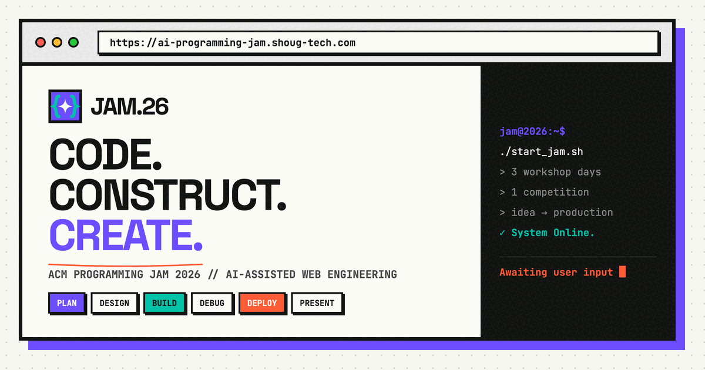

WebForge 2026
An AI-assisted web engineering competition. Every team gets the same brief, then plans, designs, builds, deploys and presents a working application — and adapts to a requirement change mid-competition. Scored out of 100 across seven categories.